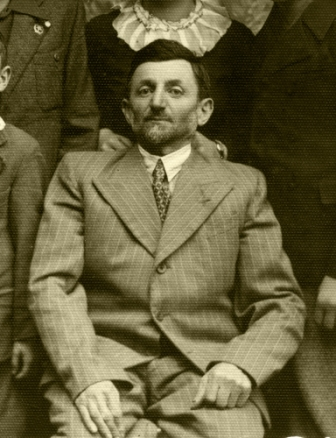
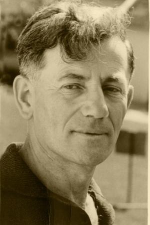
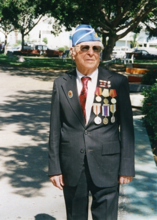

יצחק גרינשטיין
יור' ועד קהילת טוריסק
 נולד בטריסק בשנת-1882 להוריו אידל וריבה לאה. במשפחה שישה
ילדים, יצחק(איצ'ה) בין צעירי בניו. האב אידל היה איש העולם הגדול,
לרגל עסקיו נדד וביקר בארצות שונות,כולל ארצות דרום אמריקה וצפונה. בשובו לטוריסק עיסוקיו הרבים והיכרותו עם עולם העסקים היקנו לו מעמד מכובד בעיירה (גם בעיני הגויים)שנים מבניו היגרו לדרום אמריקה, אך יצחק בהיותו מוכשר החל לעסםק במסחר, נשא
לאישה את אסתר בת העיר, נולדו להם שבעה ילדים. איצ'ה היה בין
ראשוני הצעירים היוזמים להקמת בית הספר "תרבות",וילדיו למדו בו.
המשפחה התפרנסה מחנות מכולת במרכז העיר,שותפות בתחנת הקמח הגדולה,עסקים מסועפים שהיקנו לאיצ'ה מעמד מכובד בעיירה, והשפעתו רבה היתה בקרב בעלי המלאכה ודלת העם .
איצ'ה היה בורר ומתווך ביניהם והם כיבדו את דעתו, מעמדו זה תרם
רבות להיבחרו כיור' ועד הקהילה בטריסק. תפקיד אותו מילא שלוש
פעמים,בהפסקות. ידע להתהלך עם ראשי השילטון הפולני, וניצל זאת
לטובת הקהילה ואנשיה.
זכה להעלות ארצה ארבעה מבניו בטרם השואה. ניספה יחד עם כל בני העיירה בספטמבר 1942.
נולד בטריסק בשנת-1882 להוריו אידל וריבה לאה. במשפחה שישה
ילדים, יצחק(איצ'ה) בין צעירי בניו. האב אידל היה איש העולם הגדול,
לרגל עסקיו נדד וביקר בארצות שונות,כולל ארצות דרום אמריקה וצפונה. בשובו לטוריסק עיסוקיו הרבים והיכרותו עם עולם העסקים היקנו לו מעמד מכובד בעיירה (גם בעיני הגויים)שנים מבניו היגרו לדרום אמריקה, אך יצחק בהיותו מוכשר החל לעסםק במסחר, נשא
לאישה את אסתר בת העיר, נולדו להם שבעה ילדים. איצ'ה היה בין
ראשוני הצעירים היוזמים להקמת בית הספר "תרבות",וילדיו למדו בו.
המשפחה התפרנסה מחנות מכולת במרכז העיר,שותפות בתחנת הקמח הגדולה,עסקים מסועפים שהיקנו לאיצ'ה מעמד מכובד בעיירה, והשפעתו רבה היתה בקרב בעלי המלאכה ודלת העם .
איצ'ה היה בורר ומתווך ביניהם והם כיבדו את דעתו, מעמדו זה תרם
רבות להיבחרו כיור' ועד הקהילה בטריסק. תפקיד אותו מילא שלוש
פעמים,בהפסקות. ידע להתהלך עם ראשי השילטון הפולני, וניצל זאת
לטובת הקהילה ואנשיה.
זכה להעלות ארצה ארבעה מבניו בטרם השואה. ניספה יחד עם כל בני העיירה בספטמבר 1942.
נטע וינר
ראש קהילת טריסק
 נטע וינר נולד בטריסק בשנת 1882 לאביו ישעיהו ולאימו רייזל. סבו של נטע היה מהגבאים בחצר המגיד מטריסק,ולפרנסתו עסק בייצור לבנים לבנין. אביו ישעיהו עסק בעיקר בניהול וייצור במפעל,רחק מחצר הרבי,ולימים חשדו שאף חבר "למתנגדים." נטע למד בחידר והמשיך לימודיו בישיבה בלובלין וקבל סמיכות לרבנות. עם מות אביו שב לטריסק לשאת בעול המפעל. עם שובו חבר לקבוצת צעירים בני טובים בוגרי ישיבות, שהושפעו מהציונות ושאפו לקדם את העיירה.עם נישואיו לרעייתו פסיה, ב1909 יזם הקמת בית ספר לילדי ישראל ,שבתחילתו שפות ההוראה היו עברית ויידיש. החרדים הטילו חרם על היוזמים,והם נאלצו להקים בית כנסת נפרד,"מסחרי-ציוני." כך החלה פעילותו הציבורית הפומבית. עם הכיבוש הפולני התארגנה הקהילה ובשנת 1924 נבחר נטע וינר לראשות הקהילה בטריסק, וכיהן לסירוגין שלוש פעמים. יזם צירופו של בית הספר לרשת "תרבות", להגברת החינוך הציוני, הקמת ספריה עברית.לא מעט שנים נשא בעול הכספי של בית הספר, ואף תשלום משכורות. עזר לקדם את הפעילות החברתית-כלכלית, קופת גמילות חסדים,עזרת חולים, הבנסת כלה ועוד. בשנות השלושים הראשונות עלה המפעל באש ולא הצליח לשקמו. ששת ילדיו,חמישה בנים ובת דיברו עברית והיו חברים בהשומר הצעיר ושאפו לעלות לארץ ישראל. אך עד המלחמה רק הבן משה הצליח להגשים את החלום. נטע וינר נספה בשואה ב-1942יחד עם רעייתו פסיה ביתו שושנה ושני בניו הצעירים שמעון ופסח וכל קהילת טריסק.
אברהם שייע בר
השוחט הראשי בטריסק
 אברהם שייע בר נולד בשנת 1881 בטריסק. בן למשפחה של שוחטים
מדורות. אביו פיניע (פנחס) היה שוחט בטריסק אחרי אביו. אברהם שייע למד בישיבה בטריסק, התמחה למקצוע והמשיך בעיירה קשיבקי. נשא לאישה את חנה, בת העיירה טורצ'ין, וקבל משרת שוחט בעיר קוסטופול.
עם התפנות משרת שוחט ראשי בטריסק,חזר לעיירה והמשיך במקצועו-
תפקידו. למרות היותו בעל משרה "דתית" ולמרות היותו איש מסורתי מאד,לא מנע מבניו וביתו להשתייך לתנועה הציונית ולתנועת השומר הצעיר,
ולהיות פעילים בה. בזמן השלטון הסובייטי, שונא הציונות, היה ביתו מרכז
פעילות ציונית מחתרתית. אישתו חנה היתה בסוד הענינים הציוניים.
נספו בספטמבר 1942 יחד עם כל היהודים תושבי העיירה טוריסק.
אברהם שייע בר נולד בשנת 1881 בטריסק. בן למשפחה של שוחטים
מדורות. אביו פיניע (פנחס) היה שוחט בטריסק אחרי אביו. אברהם שייע למד בישיבה בטריסק, התמחה למקצוע והמשיך בעיירה קשיבקי. נשא לאישה את חנה, בת העיירה טורצ'ין, וקבל משרת שוחט בעיר קוסטופול.
עם התפנות משרת שוחט ראשי בטריסק,חזר לעיירה והמשיך במקצועו-
תפקידו. למרות היותו בעל משרה "דתית" ולמרות היותו איש מסורתי מאד,לא מנע מבניו וביתו להשתייך לתנועה הציונית ולתנועת השומר הצעיר,
ולהיות פעילים בה. בזמן השלטון הסובייטי, שונא הציונות, היה ביתו מרכז
פעילות ציונית מחתרתית. אישתו חנה היתה בסוד הענינים הציוניים.
נספו בספטמבר 1942 יחד עם כל היהודים תושבי העיירה טוריסק.
ישעיהו(שייקה) ויינר
ממנהיגי השומר הצעיר בפולין
 ישעיהו (שייקה) ויינר נולד בטריסק בשנת 1912 לנטע ופסיה ויינר. אביו בעל מפעל ללבנים,היה בוגר ישיבה וסמיכות לרבנות שנתפס לרעיון שיבת ציון והציונות. בהיוולד שייקה החליט נטע ויינר יחד עם אזרחים צעירים להקים בעיירה בית ספר ושפת ההוראה שלו עברית ויידיש. מעשה זה גרם להכרזת חרם על כל הקבוצה, לא נתנו להם להתפלל בבית הכנסת של העיירה.
נטע ויינר וכל אנשי הקבוצה הגיבו ע'י הקמת בית כנסת עצמאי-ציוני.כך זכה שייקה ליהיות בין הילדים הראשונים בעיירה שכלל לא למדו בחדר,ובגיל שלוש וחצי ניהיה לתלמיד כיתה א' בבית הספר. בבית הספר דיברו עברית,כל המקצועות נלמדו בעברית(מלבד המקצועות הפולניים)עם סיום בית הספר נשלח שייקה ללמוד בגימנסיה "תרבות" בעיר הסמוכה-קובל. שם פרחו כל תנועות הנוער הציוניות.
שייקה התלבייט ובסוף הצטרף לתנועת השומר הצעיר. שייקה היה תלמיד מצטיין אך הקדיש זמן רב לתנועה. השתתף בסמינרים וכנסים תנועתיים, תוך זמן קצר רכש חברים רבים ונעשה לאחד החניכים הבולטים בקן. בשובו הביתה לחופש מלימודים התלוו איליו חברים מהגמנסיה,יחד הקימו קן השוה'צ בעיירה.לקראת סיום לימודיו כבר היה הבולט בקינים בסביבה. בתנועה היציעו לו ליהיות פעיל תנועתי באיזור, הוא סרב בטענה שחייב להגשים כמו חבריו ולצאת לקבוץ הכשרה. כאשר חל עיכוב בהקמת ההכשרה החליט שייקה להיאתר לפניית בית הספר תרבות בעיירה ולשמש כמורה. בו זמנית עסק גם בריכוז הקן השומרי, הקן גדל ופרח.
עם הקמת נקודת ההכשרה יצא שייקה לשם.והיה לאחד ממיסדי קבוץ תל-חי. כדרכו סרב לקבל על עצמו "תפקידים" בנימוק שחייב הוא לעבור הכשרה בעבודות פיזיות...ומסיבה זו סרב לקחת ימי מנוחה כאשר נפצע בידו.תוך ימים אחדים קבל זיהום(אז קראו לזה הרעלת דם) חום גבוה והתמוטט. נלקח לבית חולים,כפסע בינו לבין המוות. הוא צלח את המחלה אך נחלש מאוד וחויב בהחלמה ארוכה...בהנהגה הראשית של השוה'צ הצליחו לשכנעו לבוא לורשה ולעסוק בעבודה "מנהלית". אחרי תקופת ההחלמה ביקשו אנשי ההנהגה הראשית שקבוץ תל-חי ישחרר את שייקה לעבודה קבועה במרכז. המצב בתנועה היה קשה ושייקה הסכים,בתנאי, שקבוץ תל-חי יחליט בחיוב. אחרי ויכוחים ארוכים נתקבלה החלטתו החיובית של הקבוץ. שייקה החל פעילותו בהנהגה הראשית בורשה במלוי תפקידים זעירים. עד מהרה בלט ביכולתו ליצור יחסי עבודה חבריים טובים עם אנשי ההנהגה ואנשי בתנועה בביקוריו התכופים בקיני התנועה בעיירות ובערים. היה שליח ההנהגה לקבוצי ההכשרה לצורך אישור המועמדים לקבלת סרטיפיקטים לעליה לארץ ישראל. תפקיד קשה מבחינה חברתית,ומלא אותו בהצלחה. היה בין מארגני העליה הבלתי לגלית ארצה, ליווה שיירות של רכבות עד לחופי הים התיכון,דרך איטליה והים השחור דרך רומניה. בהצלחה רבה. בשנת 1936 נשלח ע"י ההנהגה לארגן עזרה לעשרות אלפי יהודים שגורשו לפולין בחורף קשה. כנואם מוכשר ביידיש ייצג את "גוש ארץ ישראל העובדת" בעצרות הענקיות נגד הוצאתו להורג של שלומה בן יוסף. שייקה רכש אימונם של הנהגות התנועות המתחרות והתנועות האחיות. באוגוסט 1939 נבחר כציר לקונגרס הציוני שהתכנס בשווייץ.
בסוף הקונגרס פלשה גרמניה לפולין. נשכרה אוניה שהובילה את כל הצירים ארצה. שייקה הרגיש מחובתו לחזור לפולין ליהיות עם התנועה בימי המלחמה הקשים. בדרכים עקלקלות היגיע יחד עם שניים מצירי הגוש לגבול רומניה פולין.אותו חצו ברגל,פעולות המלחמה היו בעיצומן, תוך כמה ימי נדודים היגיעו לורשה שכבר היתה תחת הפצצות האויר. כונסה הנהגת חרום,נעשו הכנות להתנגדות לגרמנים.הגרמנים שמו מצור על העיר, פצצות ופגזים פגעו בבתי אזרחים, היו הרוגים רבים, לא היה חשמל, מים שאבו מנהר הוויסלה בדליים.כעבור שלושה שבועות של לחימה,החליט הצבא הפולני להיכנע. כל הגברים מגיל 18 נקראו לצאת את וורשה פן יוכרזו כשבויים. ההנהגה הראשית קראה לכל חברי התנועה מעל גיל14-15 להצטרף להמוני הנוטשים את וורשה לכיוון הגבול הרוסי החדש. הליכה בלילות בדרכים צדדיות כדי להימנע מהפצצות ביום.את הגבול חצה בלילה בסכנת נפשות. יחסם של שלטונות ברית המועצות ליהודים היה טוב,אך החלו מאסרים של פעילי התנועות הציוניות. ההנהגה במחתרת כיוונה את חברי התנועה בשטח הסובייטי לנוע לכיוון איזור ווילנה אותה צירפו למדינת ליטא, שעדיין לא שלטו בה הסובייטים. כאלף אנשי השוה"צ הגיעו לווילנה ואורגנו בבתים של שלטונות פולין שהתרוקנו...
שייקה היה מוותיקי ההנהגה של השוה"צ וממנהיגיה, שהתרכזו בוילנה בחיפוש דרכים להפעלת התנועה בפולין הכבושה,וחיפוש דרכי עליה. שייקה התנדב לצאת עם המסתננים לוורשה,שתחת הכיבוש הגרמני,אך ההנהגה סרבה לאשר את יציאתו. זמן קצר לפני פרוץ מלחמת גרמניה רוסיה הצליח יחד עם קבוצות חברים להגיע לארץ ישראל.
התקבל כחבר בקבוץ מסילות(תל חי בפולין)והפך להיות שליח מתריע בשער כלפי הנהגת התנועה והמוסדות ,מטעם עצמו,מתוך רגש עמוק למצב יהודי פולין, וחברי התנועה בפולין ובכל מזרח איופה. במשך חדשים נדד בין המוסדות, התריע ניסה לשכנע, ואף הציע עצמו לשליחות לשם,לבד.או עם צוות. אך חוסר המודעות בארץ למצב היהודים תחת שלטון הנאצים, ולאשר מתרחש שם! אך כאשר מפקדת ההגנה הציעה לו לצאת לפרס במדי קצין בריטי,כדי לנסות ליצור קשר עם אנשי התנועות בעומק רוסיה, מיד הסכים,למרות שזמן קצר לפני כן נישא לחנה ויחד עברו לקבוץ עין-השופט. בתנאים קשים של מחתרת ,הצליח ליצור קשר עם רבים מאנשי התנועות שחיו כפליטים בארצות אסיה הסובייטית, ולהעביר להם סיוע במזון וכסף. כך שנה וחצי, עד שהמשלחת הוחזרה ארצה. בקבוץ עסק בהוראה בבית הספר במשך שנתיים. ושוב התנדב לצאת לאירופה הכבושה להציל יהודים.. חודש אחרי הולדת ביתו חגית יצא בחורף 44 בחשאי,לאיטליה המשוחררת משם החל בפעילות של העלאת יהודים ארצה בעליה בלתי לגלית. מאיטליה התקדם בעקבות צבאות הברית ליוגוסלביה,משם,דרך שטחים משוחררים ,הצליח להגיע לעיר לובלין פולין שבועות אחדים אחרי שחרורה בידי הצבא האדום. זכה לקדם פני חברי תנועה רבים שחזרו ברכבות ממזרח רוסיה. ארגן אותם בקבוצות(קבוצים) הסדיר עזרה ועם שחרור פולין התקדם איתם לוורשה, לודז'. וכאשר הוחלט לעזוב את פולין,היה בין ראשי המארגנים של הבריחה. ושוב בניירות מזויפים חזר ארצה. נכנס לעבודת ההוראה. לא עבר זמן רב ונקרא שוב לפעילות בתנועה, הפעם לריכוז ההנהגה העליונה של השומר הצעיר בעולם. תפקיד אותו מילא תוכן רב, תוך זמן קצר הצליח להפעיל התנועה בארצות אירופה בארה"ב, ארגנטינה,ודרום אמריקה.עקב היכרותו עם התנועות בעולם, היה למועמד המועדף לשליחות תנועתית לארגנטינה,לשם יצא הפעם, עם חנה אשתו ושני ילדיו. כישרונו של שייקה בלימוד שפות עמד לו בבואו לארגנטינה, לנהל את התנועה. יכולתו ביצירת קשרים עם אנשים במוסדות וחניכים בתנועה עמדה לו גם שם. תוך זמן קצר התבלט לא רק בתנועה,גם המדינה נעזרה בו רבות. ארבע שנים עשה בשליחות זו. ובשובו ארצה בטוח היה, שזה תפקידו הציבורי האחרון,"ועת לעשות לביתי". רק זמן קצר יחסית נהנה שייקה מחיי משפחה וקבוץ שלווים. התקופה היתה של ירידתה האיטית של בריה"מ כמעצמה עולמית. מדינת ישראל ויהדות העולם בקשו לפתוח בפעולת הצלה של יהודי בריה"מ, שהיו מנותקים משאר חלקי היהדות . נפתח מסע כל עולמי בדרישה "שחררו את עמי".שליחים נשלחו לכל חלקי העולם לגיוס דעת הקהל למען מטרה זו. ממוסדות המדינה פנו לשייקה ולקבוץ עין-השופט לאפשר לו לצאת כרכז הפעילות בארצות דרום אמריקה.שליטתו בשפה הספרדית,היכרותו עם מדינות דרום אמריקה,מנהיגיה,ושכבת האינטלקטואלים שלה,גרמו לבחירתו ע"י מוסדות המדינה כמתאים ביותר לתפקיד. שייקה ראה בהצעה זו, המשך פעילותו להצלת יהודים והבאתם לישראל. אחרי דיונים והתלבטיות רבים, יצא שייקה עם רעייתו חנה לארגנטינה, הפעם בתור דיפלומט של מדינת ישראל.
במרץ האופייני לו החל שייקה את פעילותו בקרב האינטלקטואלים בארצות דרום אמריקה ובגבוי סמוי של שלטונות אותן המדינת. בין היתר יזם והוציא לאור,יחד עם הבולטים מקרב אנשי הרוח שני ירחונים בספרדית ואנגלית. נערכו כנסים ועצרות המוניות בבירות המדינות. מכולם יצאה תביעה "שלח את עמי". שייקה היה בין היוזמים של שתי ועידות בריסל בהן השתתפו גם עשרות רבות של אנשי רוח ,תרבות ופוליטיקה מדרום אמריקה. כך ללא לאות ,כאשר המטרה הקדושה של הצלת יהדות ברית המועצות לנגד עיניו תמיד,מבלי לשמו על בריאותו,המשיך כמעט ארבע שנים, ואז חלה במחלה ממארת. טובי הרופאים בארגנטינה ובארץ עמלו קשה כדי להצילו...נפטר ביולי 1979 צעיר ברוחו ונפשו.
בהלוויה בעין השופט השתתפו נציגי ועדי אנשי הרוח מכל דרום אמריקה. כאלה היו חייו של שייקה, אשר האמין בכל נימי נפשו והגשים את חלום שובו של העם היהודי לארצו. מצער מאד וכואב ששייקה לא זכה לראות בעלית יהודי ברית המועצות.
יעקב שפס
מהפעילים המרכזיים של הקבוץ המאוחד.
 יעקב שפס בנם שלמיכאל וגולדה שפס נולד בטריסק בשנת 1910.
המשפחה היתה בעלת מפעל קטן להפקת שמן פשתן,מפשתה ומזון לבעלי
חיים מקליפותיו. במשפחה היו חמישה ילדים. היו מסורתיים אך "מתנגדים"
לחסידות,כמו רוב תושבי העיירה. בבית דיברו יידיש,אך הילדים למדו בביס'
"תרבות" והשתייכו לתנועה הציונית,כאשר כמחצית העיירה השתייכה "לבונד".
יעקב למד בחידר ובסיומו למד בבית הספר. הושפע מאד מתנועת ההכשרות
ובגיל 17,אחרי סיום כיתה יא' ברחו,יחד עם חברו הטוב להכשרה בשם :
ק ל ו ס ו ב ה. עבודת פרך, רעב ומחסור במחצבת אבן פרימיטיבית בה ניספו
מספר חלוצים בזמן "הכשרתם." בשנת 1930 עלו ארצה והיגיע לקבוץ גבעת
השלושה, שם התרכזו יוצאי קלוסובה. ב-1933 ניהיה יעקב לנהג המשאית הראשון של הקבוץ. המשיך עד לגיוסו, כמתנדב מטעם קבוצו למשטרה הבריטית. למד בביס' לשוטרים בירושלים ובסיומו נתמנה כשוטר רוכב באיזור
חדרה, והימים ימי המרד הערבי 1936. לימים נבחר ליהיות למלווהו של
נשיא ההסתדרות הציונית פרופ. ויצמן. והשתתף בקונגרס הציוני ב1939 עם
פרוץ מלחמת העולם השנייה. עם שובו ארצה התחתן עם דורה בת חדרה ואתה עברו לקבוץ גבעת חיים. כאן התמנה למנהל קואופרטיב ההובלה "עמק חפר",מראשוני הקואופרטיבים בארץ ואחד הגדולים. אחרי מספר שנים נתבקש לצאת לפעילות תנועתית בהנהלת מפעל הבנייה של התנועה.ובהנהלת "סולל בונה" למרוץ בנייה אדיר. עם מות אשתו דורה ממחלה חזר לקבוץ. חלה במחלה קשה ,ממנה לא החלים. נפטר ב-15.09.1990.
יעקב שפס בנם שלמיכאל וגולדה שפס נולד בטריסק בשנת 1910.
המשפחה היתה בעלת מפעל קטן להפקת שמן פשתן,מפשתה ומזון לבעלי
חיים מקליפותיו. במשפחה היו חמישה ילדים. היו מסורתיים אך "מתנגדים"
לחסידות,כמו רוב תושבי העיירה. בבית דיברו יידיש,אך הילדים למדו בביס'
"תרבות" והשתייכו לתנועה הציונית,כאשר כמחצית העיירה השתייכה "לבונד".
יעקב למד בחידר ובסיומו למד בבית הספר. הושפע מאד מתנועת ההכשרות
ובגיל 17,אחרי סיום כיתה יא' ברחו,יחד עם חברו הטוב להכשרה בשם :
ק ל ו ס ו ב ה. עבודת פרך, רעב ומחסור במחצבת אבן פרימיטיבית בה ניספו
מספר חלוצים בזמן "הכשרתם." בשנת 1930 עלו ארצה והיגיע לקבוץ גבעת
השלושה, שם התרכזו יוצאי קלוסובה. ב-1933 ניהיה יעקב לנהג המשאית הראשון של הקבוץ. המשיך עד לגיוסו, כמתנדב מטעם קבוצו למשטרה הבריטית. למד בביס' לשוטרים בירושלים ובסיומו נתמנה כשוטר רוכב באיזור
חדרה, והימים ימי המרד הערבי 1936. לימים נבחר ליהיות למלווהו של
נשיא ההסתדרות הציונית פרופ. ויצמן. והשתתף בקונגרס הציוני ב1939 עם
פרוץ מלחמת העולם השנייה. עם שובו ארצה התחתן עם דורה בת חדרה ואתה עברו לקבוץ גבעת חיים. כאן התמנה למנהל קואופרטיב ההובלה "עמק חפר",מראשוני הקואופרטיבים בארץ ואחד הגדולים. אחרי מספר שנים נתבקש לצאת לפעילות תנועתית בהנהלת מפעל הבנייה של התנועה.ובהנהלת "סולל בונה" למרוץ בנייה אדיר. עם מות אשתו דורה ממחלה חזר לקבוץ. חלה במחלה קשה ,ממנה לא החלים. נפטר ב-15.09.1990.
הרשל שטש'רב
פעיל חברתי ותרבותי
 הרשל שטש'רב נולד בטריסק ב-23.12.1915. בן בכור למשפחת
סוכער( יששכר) וחנה שטש'רב. במשפחה שבעה ילדים.
אב המשפחה היה חייט ופרנס את משפחתו בכבוד מתפירת בגדים
ברמה גבוהה (ביחס לרמה המקובלת באיזור) המשפחה היתה דתית
מסורתית, אך האב היה בין ראשוני התומכים בהקמת בית ספר נפרד
בו שפת ההוראה היתה אידיש. הרשל, כרוב הילדים בזמנו למד בחדר
מספר שנים, היה תלמיד מצטיין "שניבאו לו גדולות." כאשר הוקם בית ספר בעיירה, בו לימדו אידיש ועברית,היה אביו בין ראשוני בעלי המלאכה ששלחו את ילדיהם ללמוד בו. הרשל המשיך לימודיו תוך כדי עבודתו בבית המלאכה של אביו. היה פעיל חברתית בין צעירי הבונד ומהדמויות הבולטות והמשפיעות בקרב בני הנוער. תוך
כדי פעילותו הושפע על ידי פעילים קומוניסטיים במחתרת, תוך זמן
קצר, הצטרף לפעילות המחתרתית ,כאשר פעילותו בקרב צעירי הבונד היה לכיסוי לפעילותו המחתרתית. פעילי המחתרת היו בעיקר
בני נוער יהודיים .שלטונות פולין החדירו מלשינים לשורות המחתרת,ועד מהרה החלו מאסרים בקרב הפעילים. הרשל קיבל
ונידון להרבה שנים של מחנה ריכוז ידוע לשימצה "קרטוזה ברזקה".
בתנאים הקשים של מחנה הריכוז ידע עינויים,מחלות ורעב. עם פרוץ מלחמת גרמניה פולין שוחרר וחזר לביתו בעיירה שבור וחולה. כאשר
הצבא האדום כבש את טוריסק , הרשל ניהיה פעיל מרכזי במפלגה
הקומוניסטית באיזור. אך הימים הטובים קצרים היו. עם פלישת
הנאצים, השיג אבי המשפחה זוג סוסים ועגלה וכל המשפחה ומספר טריסקאים נוספים ,נסעו בעקבות הצבא האדום הנסוג. נסיעתם האיטית לוותה בהפצצות הגרמנים והתנכלויות שלטונות הצבא האדום. בדרכם מזרחה התעכבו בקולחוזים, כדי לזכות במעט מזון
למשפחה. בתלאות הדרך התפלגה המשפחה. אך רובה הגיעה לקולחוז אוזבקי,שם קבלו אותם בסבר פנים על היותם אנשים עובדים
שלא בקשו לחם חסד. בהיותו ברוסיה הכיר את המשטר והתאכזב.
עם סיום המלחמה נסעו מערבה ,המשפחה התאחדה,יחד עלו לישראל. הרשל לא הצליח להשתלב כדי לפרנס את משפחתו שהקים, והיגר לאמריקה. שם חי ,עבד עד יומו האחרון.
הרשל שטש'רב נולד בטריסק ב-23.12.1915. בן בכור למשפחת
סוכער( יששכר) וחנה שטש'רב. במשפחה שבעה ילדים.
אב המשפחה היה חייט ופרנס את משפחתו בכבוד מתפירת בגדים
ברמה גבוהה (ביחס לרמה המקובלת באיזור) המשפחה היתה דתית
מסורתית, אך האב היה בין ראשוני התומכים בהקמת בית ספר נפרד
בו שפת ההוראה היתה אידיש. הרשל, כרוב הילדים בזמנו למד בחדר
מספר שנים, היה תלמיד מצטיין "שניבאו לו גדולות." כאשר הוקם בית ספר בעיירה, בו לימדו אידיש ועברית,היה אביו בין ראשוני בעלי המלאכה ששלחו את ילדיהם ללמוד בו. הרשל המשיך לימודיו תוך כדי עבודתו בבית המלאכה של אביו. היה פעיל חברתית בין צעירי הבונד ומהדמויות הבולטות והמשפיעות בקרב בני הנוער. תוך
כדי פעילותו הושפע על ידי פעילים קומוניסטיים במחתרת, תוך זמן
קצר, הצטרף לפעילות המחתרתית ,כאשר פעילותו בקרב צעירי הבונד היה לכיסוי לפעילותו המחתרתית. פעילי המחתרת היו בעיקר
בני נוער יהודיים .שלטונות פולין החדירו מלשינים לשורות המחתרת,ועד מהרה החלו מאסרים בקרב הפעילים. הרשל קיבל
ונידון להרבה שנים של מחנה ריכוז ידוע לשימצה "קרטוזה ברזקה".
בתנאים הקשים של מחנה הריכוז ידע עינויים,מחלות ורעב. עם פרוץ מלחמת גרמניה פולין שוחרר וחזר לביתו בעיירה שבור וחולה. כאשר
הצבא האדום כבש את טוריסק , הרשל ניהיה פעיל מרכזי במפלגה
הקומוניסטית באיזור. אך הימים הטובים קצרים היו. עם פלישת
הנאצים, השיג אבי המשפחה זוג סוסים ועגלה וכל המשפחה ומספר טריסקאים נוספים ,נסעו בעקבות הצבא האדום הנסוג. נסיעתם האיטית לוותה בהפצצות הגרמנים והתנכלויות שלטונות הצבא האדום. בדרכם מזרחה התעכבו בקולחוזים, כדי לזכות במעט מזון
למשפחה. בתלאות הדרך התפלגה המשפחה. אך רובה הגיעה לקולחוז אוזבקי,שם קבלו אותם בסבר פנים על היותם אנשים עובדים
שלא בקשו לחם חסד. בהיותו ברוסיה הכיר את המשטר והתאכזב.
עם סיום המלחמה נסעו מערבה ,המשפחה התאחדה,יחד עלו לישראל. הרשל לא הצליח להשתלב כדי לפרנס את משפחתו שהקים, והיגר לאמריקה. שם חי ,עבד עד יומו האחרון.
יחזקאל צימרבליט
 נולד בטריסק בשנת 1921 להורים ,אבא דוד אמא רייזל. משפחה
עמלנית, האב היה בנאי מומחה ומבוקש לבניה בהתאם לתכניות בניה על רמה גבוהה. אמו היתה תופרת בגדי נשים וחתונה, ומלמדת ומדריכה בנות במקצועה.
נולד בטריסק בשנת 1921 להורים ,אבא דוד אמא רייזל. משפחה
עמלנית, האב היה בנאי מומחה ומבוקש לבניה בהתאם לתכניות בניה על רמה גבוהה. אמו היתה תופרת בגדי נשים וחתונה, ומלמדת ומדריכה בנות במקצועה.
 יחזקאל למד "בחידר" ובסיומו נכנס לביס' "צישא" ששפת ההוראה בו היתה יידיש. עם סיום בית הספר, החל לעבוד, הצטרף לקבוצת
ירדן של השומר הצעיר. היה פעיל מאד בקבוצה. מספר חדשים אחרי כניסת הרוסים לטריסק, גויס לצבא האדום. מיום פלישת הנאצים נמצא בחזית, נלחם,נפצע קשה, אחרי שישה חדשים,
בבית חולים, למרות נכותו החלקית,חזר לחזית והמשיך להילחם עד הניצחון.
זכה באותות הצטינות,ביניהם האות הגבוה- הכוכב האדום. עם סיום המלחמה ,עלה ארצה, התקבל כחבר במושב כפר ברוך, וחי בו כחקלאי,עם רעייתו ושלושת ילדיו, דודק, שמואליק
ושושנה עד יום מותו בשנת 1991.
בנו שמואליק נפל בשרותו צבאי.
יחזקאל למד "בחידר" ובסיומו נכנס לביס' "צישא" ששפת ההוראה בו היתה יידיש. עם סיום בית הספר, החל לעבוד, הצטרף לקבוצת
ירדן של השומר הצעיר. היה פעיל מאד בקבוצה. מספר חדשים אחרי כניסת הרוסים לטריסק, גויס לצבא האדום. מיום פלישת הנאצים נמצא בחזית, נלחם,נפצע קשה, אחרי שישה חדשים,
בבית חולים, למרות נכותו החלקית,חזר לחזית והמשיך להילחם עד הניצחון.
זכה באותות הצטינות,ביניהם האות הגבוה- הכוכב האדום. עם סיום המלחמה ,עלה ארצה, התקבל כחבר במושב כפר ברוך, וחי בו כחקלאי,עם רעייתו ושלושת ילדיו, דודק, שמואליק
ושושנה עד יום מותו בשנת 1991.
בנו שמואליק נפל בשרותו צבאי.
יעקב שצ'ירב
 נולד בשנת 1920 בטריסק להורים יששכר(סוכער) ואימו חייה.מקצועו של האב-חייט, הפעילו בית מלאכה לבגדים מוכנים,שם הועסקו גם האם וגם הבנים הבוגרים יותר.פרנסתם היתה מצויה, במשפחה חמישה ילדים,הבנים הראשונים למדו בחידר,אך עם הקמתו של ביס' "צישא" ששפת ההוראה בו היתה יידיש, עברו ללמוד בו. אחיו הבכור הרשל, הושפע מהרעיון הקומוניסטי והצטרף למחתרת . יעקב(יענקל) סיים את בית-הספר והחל ללמוד מקצוע. באותו זמן הצטרף לקן השומר הצעיר לקבוצת "ירדן".תוך זמן קצר נקלט והיה אחד הפעילים בה. עם כניסת הצבא הסובייטי, השתתף בפעולה הציונית במחתרת, עד לגיוסו לצבא האדום. עם פלישת הנאצים ואחרי אימון קצר הועבר לחזית סביב העיר לנינגרד. חווה את זוועות הקרבות, הרעב במצור. נפצע קשה מאד,ושכב זמן רב בלנינגרד בתנאים סניטריים ובטחוניים קשים ביותר,נשאר נכה ברגלו וחולה עד סוף ימיו. הועבר לעורף לביח'. אחרי החלמתו החלקית שוחרר,מצא את משפחתו בעורף, וחי איתם. עם סיום המלחמה נדד עם המשפחה לפולין ולמערב. עלה לישראל.נשא אישה נולדו לו שני ילדים. בכל ימיו בארץ היתה בריאותו רופפת וסבל מאד. נפטר בשנת 2006 .
ישראל פרישברג
 ישראל פרישברג בנם הבכור של רבקה ושמעון פרישברג נולד בטריסק
בשנת 1907 .במשפחה, הבנות טובה ופפה והבן הצעיר גד.(פישל)
המשפחה עסקה בהסעדה, ומצבה הכלכלי היה משופר.
ישראל סיים את לימודיו בישיבה והמשיך בלימודי כלכלה וניהול. נאלץ להפסיק לימודיו עקב מחלתו ומותו של אביו. בשובו לטריסק, חבר ישראל
לנטע וינר בניהול בית הספר העברי אותו יסד. למרות עבודתו המאומצת
והקשה, לעזרת אימו, בפרנסת המשפחה, היה פעיל ומעורב ביותר בפעילות הציונית . אחרי תקופה קצרה נתמנה למחליפו של נטע וינר בניהול האדמיניסטרטיבי והכלכלי של בית הספר "תרבות", תפקיד שמילא
בהתנדבות.
ישראל הקדיש מיטב זמנו לפעילות הציונית וניהול אדמיניסטרטיבי
של בית הספר "תרבות" שמצבו הכלכלי הורע מאד עקב המשבר הכלכלי שפקד את בעלי העסקים בטריסק. ישראל הפעיל צעירים נוספים לעזרת בית הספר.
בתקופת פעילותו הכיר ישראל את טוניה טפר, מורה לפולנית ולמוסיקה מהעיר קולומיה שהצטרפה לסגל ההוראה בבית הספר "תרבות". הם נישאו
ובשנת עלו לארץ. טוניה הצטרפה לצוות המורים בבית ספר "י.ק.א." בפתח תקווה, שם לימדה שנים רבות עד שמחלה קשה הכריעה אותה. היא נפטרה בשנת .
ביום עלייתו ארצה הצטרף ישראל למחתרת "ההגנה" ונתמנה כמנהל מפעל
ליצור חומרי נפץ של ההגנה במחתרת. ישראל לא נרתע מסכנות פעולתו והמשיך בניהול מפעלים שונים עד לעצמאות המדינה. מיום הכרזת המדינה
התמנה לחבר בהנהלת התעשיה הצבאית בישראל בה פעל עד צאתו לגמלאות ועד מותו. נפטר ב-13.03.96 ישראל היה אדם יהודי שורשי משכיל, נוח ואהוב על חבריו הרבים.
אחותו פפה סימה את הלימודים ויצאה להכשרה לקבוץ "עמל" בעיר ביאליסטוק . בשנת 1935 עם סיום ההכשרה עלתה לארץ ישראל.
בתחילת דרכה בארץ שהתה בקבוץ פגשה בשלמה ייבין, נשאו ועברו לחיפה, נולדו להם שתי בנות: אילנה ודינה. פפה ושלמה היו פעילים בהסתדרות ובאיגוד המקצועי עד צאתם לגמלאות. פפה נפטרה באפריל2006.
אחיו הצעיר של ישראל, גד(פישל) עמד לסיים את לימודיו ב"תרבות" והיה למדריך צופים צעירים בקן. חבר פעיל בהנהגת קן השומר הצעיר בטריסק.
עם פרוץ מלחמת העולם השניה, הופתע ,יחד עם חבריו פעילי השוה'צ. עם
כניסת הצבא האדום לעיירה.הפעילות הציונית נאסרה, הפעילים ירדו למחתרת,בנסותם להציל מהשמדה את המורשת הציונית. כמו כל קבוצת
הפעילים ,יצאו לערים אחרות לפי הוראת ההנהגה במחתרת. נעו כפליטים
לעיר וילנה שנמסרה למדינת ליטא,והוכרזה כבירתה.(ליטא נשארה עדין מדינה בעלת משטר חופשי) תלאות רבות עברו החברים בהיותם פליטים חסרי אזרחות. במאמצים רבים ונדודים הגיעו ארצה. גד וחבריו לקבוצה
הצטרפו לקבוץ המעפיל בעמק חפר. אחרי שהות שם יצא ללימודי הוראה,
הסימינר הקבוצים בגבעת השלושה. עם תחילת עבודתו בקליטת עליה ברעננה פגש את מרטה, שלמדה טיפול בתינוקות ועבדה במקצועה בקליטת עליה. הם נישאו ב-02.11.48 . גד היה פעיל מאד בקליטת עליה
ונשלחו בשליחות הסוכנות למרסל-צרפת. שם פעלו לקליטת העולים שעברו
דרך מרסיי בדרכם לישראל. אחרי תקופה ממושכת חזרו ארצה אך לא לזמן
רב. שוב נשלחו בשליחות עליה, הפעם לדרום אמריקה. הצלחתם בתפקיד היתה רבה ומוערכת ביותר. למרטהוגד נולדו שני ילדים: רבקה ויעקב.
אחרי מחלה ממושכת נפטר גד ב-19.12.2006
האם רבקה פרישברג והאחות טובה (עם בעלה) נספו בשואה, יחד עם כל
האוכלוסיה היהודית של עיירתנו טריסק.
ישראל פרישברג בנם הבכור של רבקה ושמעון פרישברג נולד בטריסק
בשנת 1907 .במשפחה, הבנות טובה ופפה והבן הצעיר גד.(פישל)
המשפחה עסקה בהסעדה, ומצבה הכלכלי היה משופר.
ישראל סיים את לימודיו בישיבה והמשיך בלימודי כלכלה וניהול. נאלץ להפסיק לימודיו עקב מחלתו ומותו של אביו. בשובו לטריסק, חבר ישראל
לנטע וינר בניהול בית הספר העברי אותו יסד. למרות עבודתו המאומצת
והקשה, לעזרת אימו, בפרנסת המשפחה, היה פעיל ומעורב ביותר בפעילות הציונית . אחרי תקופה קצרה נתמנה למחליפו של נטע וינר בניהול האדמיניסטרטיבי והכלכלי של בית הספר "תרבות", תפקיד שמילא
בהתנדבות.
ישראל הקדיש מיטב זמנו לפעילות הציונית וניהול אדמיניסטרטיבי
של בית הספר "תרבות" שמצבו הכלכלי הורע מאד עקב המשבר הכלכלי שפקד את בעלי העסקים בטריסק. ישראל הפעיל צעירים נוספים לעזרת בית הספר.
בתקופת פעילותו הכיר ישראל את טוניה טפר, מורה לפולנית ולמוסיקה מהעיר קולומיה שהצטרפה לסגל ההוראה בבית הספר "תרבות". הם נישאו
ובשנת עלו לארץ. טוניה הצטרפה לצוות המורים בבית ספר "י.ק.א." בפתח תקווה, שם לימדה שנים רבות עד שמחלה קשה הכריעה אותה. היא נפטרה בשנת .
ביום עלייתו ארצה הצטרף ישראל למחתרת "ההגנה" ונתמנה כמנהל מפעל
ליצור חומרי נפץ של ההגנה במחתרת. ישראל לא נרתע מסכנות פעולתו והמשיך בניהול מפעלים שונים עד לעצמאות המדינה. מיום הכרזת המדינה
התמנה לחבר בהנהלת התעשיה הצבאית בישראל בה פעל עד צאתו לגמלאות ועד מותו. נפטר ב-13.03.96 ישראל היה אדם יהודי שורשי משכיל, נוח ואהוב על חבריו הרבים.
אחותו פפה סימה את הלימודים ויצאה להכשרה לקבוץ "עמל" בעיר ביאליסטוק . בשנת 1935 עם סיום ההכשרה עלתה לארץ ישראל.
בתחילת דרכה בארץ שהתה בקבוץ פגשה בשלמה ייבין, נשאו ועברו לחיפה, נולדו להם שתי בנות: אילנה ודינה. פפה ושלמה היו פעילים בהסתדרות ובאיגוד המקצועי עד צאתם לגמלאות. פפה נפטרה באפריל2006.
אחיו הצעיר של ישראל, גד(פישל) עמד לסיים את לימודיו ב"תרבות" והיה למדריך צופים צעירים בקן. חבר פעיל בהנהגת קן השומר הצעיר בטריסק.
עם פרוץ מלחמת העולם השניה, הופתע ,יחד עם חבריו פעילי השוה'צ. עם
כניסת הצבא האדום לעיירה.הפעילות הציונית נאסרה, הפעילים ירדו למחתרת,בנסותם להציל מהשמדה את המורשת הציונית. כמו כל קבוצת
הפעילים ,יצאו לערים אחרות לפי הוראת ההנהגה במחתרת. נעו כפליטים
לעיר וילנה שנמסרה למדינת ליטא,והוכרזה כבירתה.(ליטא נשארה עדין מדינה בעלת משטר חופשי) תלאות רבות עברו החברים בהיותם פליטים חסרי אזרחות. במאמצים רבים ונדודים הגיעו ארצה. גד וחבריו לקבוצה
הצטרפו לקבוץ המעפיל בעמק חפר. אחרי שהות שם יצא ללימודי הוראה,
הסימינר הקבוצים בגבעת השלושה. עם תחילת עבודתו בקליטת עליה ברעננה פגש את מרטה, שלמדה טיפול בתינוקות ועבדה במקצועה בקליטת עליה. הם נישאו ב-02.11.48 . גד היה פעיל מאד בקליטת עליה
ונשלחו בשליחות הסוכנות למרסל-צרפת. שם פעלו לקליטת העולים שעברו
דרך מרסיי בדרכם לישראל. אחרי תקופה ממושכת חזרו ארצה אך לא לזמן
רב. שוב נשלחו בשליחות עליה, הפעם לדרום אמריקה. הצלחתם בתפקיד היתה רבה ומוערכת ביותר. למרטהוגד נולדו שני ילדים: רבקה ויעקב.
אחרי מחלה ממושכת נפטר גד ב-19.12.2006
האם רבקה פרישברג והאחות טובה (עם בעלה) נספו בשואה, יחד עם כל
האוכלוסיה היהודית של עיירתנו טריסק.